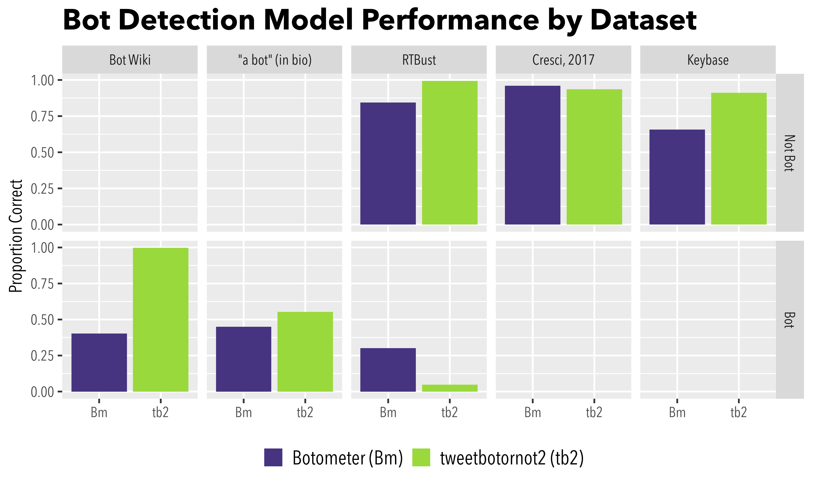

{tweetbotornot2} provides an out-of-the-box classifier for detecting Twitter bots that is easy to use, interpretable, scalable, and performant. It also provides a convenient interface for accessing the botometer API.
Installation
Install the development version of {tweetbotornot2} from Github with:
## install {remotes} if not already
if (!"remotes" %in% installed.packages()) {
install.packages("remotes")
}
## install from github
remotes::install_github("mkearney/tweetbotornot2")Predict
Use predict_bot() to run the built-in bot classifier
Provide a vector or data frame of Twitter handles and predict_bot() will return the estimated probability of each account being a bot.
## vector of screen names
screen_names <- c(
"American__Voter", ## (these ones should be bots)
"MagicRealismBot",
"netflix_bot",
"mitchhedbot",
"rstats4ds",
"thinkpiecebot",
"tidyversetweets",
"newstarsbot",
"CRANberriesFeed",
"AOC", ## (these ones should NOT be bots)
"realDonaldTrump",
"NateSilver538",
"ChadPergram",
"kumailn",
"mindykaling",
"hspter",
"rdpeng",
"kearneymw",
"dfreelon",
"AmeliaMN",
"winston_chang"
)
## data frame with screen names **must be named 'screen_name'**
screen_names_df <- data.frame(screen_name = screen_names)
## vector -> bot estimates
predict_bot(screen_names)
#> user_id screen_name prob_bot
#> 1: 829792389925597184 American__Voter 0.977959
#> 2: 3701125272 MagicRealismBot 0.978815
#> 3: 1203840834 netflix_bot 0.977786
#> 4: 214244836 mitchhedbot 0.976384
#> 5: 1075011651366199297 rstats4ds 0.973540
#> 6: 3325527710 thinkpiecebot 0.979165
#> 7: 935569091678691328 tidyversetweets 0.979425
#> 8: 780707721209188352 newstarsbot 0.979408
#> 9: 233585808 CRANberriesFeed 0.977394
#> 10: 138203134 AOC 0.023087
#> 11: 25073877 realDonaldTrump 0.024428
#> 12: 16017475 NateSilver538 0.023230
#> 13: 16187637 ChadPergram 0.128996
#> 14: 28406270 kumailn 0.022726
#> 15: 23544596 mindykaling 0.023267
#> 16: 24228154 hspter 0.023199
#> 17: 9308212 rdpeng 0.027967
#> 18: 2973406683 kearneymw 0.084466
#> 19: 93476253 dfreelon 0.022863
#> 20: 19520842 AmeliaMN 0.033066
#> 21: 1098742782 winston_chang 0.023383
#> user_id screen_name prob_bot
## data.frame -> bot estimates
#predict_bot(screen_names_df)This also works on Twitter user IDs.
## vector of user IDs (strings of numbers, ranging from 2-19 digits)
user_ids <- rtweet::lookup_users(screen_names)[["user_id"]]
## data frame with user IDs **must be named 'user_id'**
user_ids_df <- data.frame(user_id = users)
## vector -> bot estimates
predict_bot(user_ids)
## data.frame -> bot estimates
predict_bot(user_ids_df)The input given to predict_bot() can also be Twitter data returned by {rtweet}, i.e., rtweet::get_timelines()1.
## timeline data returned by {rtweet}
twtdat <- rtweet::get_timelines(screen_names, n = 200, check = FALSE)
## generate predictions from twitter data frame
predict_bot(twtdat)
#> user_id screen_name prob_bot
#> 1: 829792389925597184 American__Voter 0.977959
#> 2: 3701125272 MagicRealismBot 0.978815
#> 3: 1203840834 netflix_bot 0.977786
#> 4: 214244836 mitchhedbot 0.976384
#> 5: 1075011651366199297 rstats4ds 0.973540
#> 6: 3325527710 thinkpiecebot 0.979165
#> 7: 935569091678691328 tidyversetweets 0.979425
#> 8: 780707721209188352 newstarsbot 0.979408
#> 9: 233585808 CRANberriesFeed 0.977394
#> 10: 138203134 AOC 0.023087
#> 11: 25073877 realDonaldTrump 0.024428
#> 12: 16017475 NateSilver538 0.023230
#> 13: 16187637 ChadPergram 0.128996
#> 14: 28406270 kumailn 0.022726
#> 15: 23544596 mindykaling 0.023267
#> 16: 24228154 hspter 0.023199
#> 17: 9308212 rdpeng 0.027967
#> 18: 2973406683 kearneymw 0.084466
#> 19: 93476253 dfreelon 0.022863
#> 20: 19520842 AmeliaMN 0.033066
#> 21: 1098742782 winston_chang 0.023383
#> user_id screen_name prob_botExplain
Use explain_bot() to see the contributions made by each feature
View prediction contributions from top five features (for each user) in the model
## view top feature contributions in prediction for each user
explain_bot(twtdat)[
order(screen_name,
-abs(value)), ][
feature %in% feature[1:5],
.SD, on = "feature" ][1:50, -1]
#> screen_name prob_bot feature value feature_description
#> 1: AOC 0.023087 twt_srctw -1.83131 Tweet source of Twitter (official)
#> 2: AOC 0.023087 twt_rtwts -0.53836 Tweet via retweets
#> 3: AOC 0.023087 twt_atssd -0.32403 Tweet mentions variation
#> 4: AOC 0.023087 twt_srcna -0.25571 Tweet source of unknown
#> 5: AOC 0.023087 usr_actyr -0.17702 User account age
#> 6: AmeliaMN 0.033066 twt_srctw -1.50994 Tweet source of Twitter (official)
#> 7: AmeliaMN 0.033066 twt_rtwts -0.44996 Tweet via retweets
#> 8: AmeliaMN 0.033066 twt_atssd -0.28820 Tweet mentions variation
#> 9: AmeliaMN 0.033066 twt_srcna -0.26104 Tweet source of unknown
#> 10: AmeliaMN 0.033066 usr_actyr -0.24157 User account age
#> 11: American__Voter 0.977959 twt_srctw 1.67030 Tweet source of Twitter (official)
#> 12: American__Voter 0.977959 twt_srcna 0.61258 Tweet source of unknown
#> 13: American__Voter 0.977959 twt_rtwts 0.40704 Tweet via retweets
#> 14: American__Voter 0.977959 usr_actyr 0.24538 User account age
#> 15: American__Voter 0.977959 twt_atssd 0.23731 Tweet mentions variation
#> 16: CRANberriesFeed 0.977394 twt_srctw 1.78946 Tweet source of Twitter (official)
#> 17: CRANberriesFeed 0.977394 twt_srcna 0.57456 Tweet source of unknown
#> 18: CRANberriesFeed 0.977394 twt_rtwts 0.45054 Tweet via retweets
#> 19: CRANberriesFeed 0.977394 twt_atssd 0.25900 Tweet mentions variation
#> 20: CRANberriesFeed 0.977394 usr_actyr -0.10322 User account age
#> 21: ChadPergram 0.128996 twt_srctw -1.83800 Tweet source of Twitter (official)
#> 22: ChadPergram 0.128996 twt_rtwts 0.55151 Tweet via retweets
#> 23: ChadPergram 0.128996 usr_actyr -0.51066 User account age
#> 24: ChadPergram 0.128996 twt_atssd 0.38018 Tweet mentions variation
#> 25: ChadPergram 0.128996 twt_srcna -0.23952 Tweet source of unknown
#> 26: MagicRealismBot 0.978815 twt_srctw 1.68562 Tweet source of Twitter (official)
#> 27: MagicRealismBot 0.978815 twt_srcna 0.56187 Tweet source of unknown
#> 28: MagicRealismBot 0.978815 twt_rtwts 0.44872 Tweet via retweets
#> 29: MagicRealismBot 0.978815 twt_atssd 0.24485 Tweet mentions variation
#> 30: MagicRealismBot 0.978815 usr_actyr 0.22675 User account age
#> 31: NateSilver538 0.023230 twt_srctw -1.83398 Tweet source of Twitter (official)
#> 32: NateSilver538 0.023230 twt_rtwts -0.47010 Tweet via retweets
#> 33: NateSilver538 0.023230 twt_atssd -0.29305 Tweet mentions variation
#> 34: NateSilver538 0.023230 twt_srcna -0.25259 Tweet source of unknown
#> 35: NateSilver538 0.023230 usr_actyr -0.19073 User account age
#> 36: dfreelon 0.022863 twt_srctw -1.82107 Tweet source of Twitter (official)
#> 37: dfreelon 0.022863 twt_rtwts -0.45473 Tweet via retweets
#> 38: dfreelon 0.022863 twt_atssd -0.27549 Tweet mentions variation
#> 39: dfreelon 0.022863 twt_srcna -0.23698 Tweet source of unknown
#> 40: dfreelon 0.022863 usr_actyr -0.19132 User account age
#> 41: hspter 0.023199 twt_srctw -1.83198 Tweet source of Twitter (official)
#> 42: hspter 0.023199 twt_rtwts -0.50238 Tweet via retweets
#> 43: hspter 0.023199 twt_atssd -0.31002 Tweet mentions variation
#> 44: hspter 0.023199 twt_srcna -0.25074 Tweet source of unknown
#> 45: hspter 0.023199 usr_actyr -0.19768 User account age
#> 46: kearneymw 0.084466 twt_srctw -1.62032 Tweet source of Twitter (official)
#> 47: kearneymw 0.084466 twt_rtwts -0.50213 Tweet via retweets
#> 48: kearneymw 0.084466 usr_actyr 0.40284 User account age
#> 49: kearneymw 0.084466 twt_atssd -0.34244 Tweet mentions variation
#> 50: kearneymw 0.084466 twt_srcna 0.25750 Tweet source of unknown
#> screen_name prob_bot feature value feature_descriptionRate limits
If you have already collected user timeline data, predict_bot() has no rate limit. If you don’t already have timeline data, then predict_bot() relies on calls to Twitter’s users/timeline API, which is rate limited to 1,500 calls per 15 minutes (for bearer tokens) or 900 calls per 15 minutes (for user tokens). Fortunately, each prediction requires only one call to Twitter’s API, so it’s possible to get up to 6,000 predictions per hour or 144,000 predictions per day2.
## view bearer token rate limit for users/timeline endpoint
rtweet::rate_limit(rtweet::bearer_token(), "get_timeline")
#> # A tibble: 1 x 6
#> query limit remaining reset reset_at timestamp
#> <chr> <int> <int> <drtn> <dttm> <dttm>
#> 1 statuses/user_timeli… 1500 1500 15.011 mi… 2020-01-21 11:00:51 2020-01-21 10:45:51
## view user token rate limit for users/timeline endpoint
rtweet::rate_limit(rtweet::get_token(), "get_timeline")
#> # A tibble: 1 x 7
#> query limit remaining reset reset_at timestamp app
#> <chr> <int> <int> <drtn> <dttm> <dttm> <chr>
#> 1 statuses/user_ti… 900 772 11.424 … 2020-01-21 10:57:16 2020-01-21 10:45:51 ""
Botometer
Use predict_botometer() to access Botometer’s API
## get botometer scores
predict_botometer(c('kearneymw', 'netflix_bot'))
#> @kearneymw (1/2)
#> @netflix_bot (2/2)
#> user_id screen_name botometer_english botometer_universal
#> 1: 2973406683 kearneymw 0.03266 0.076513
#> 2: 1203840834 netflix_bot 0.63105 0.556587Botometer vs tweetbotornot2
Accuracy of tweetbotornot versus botometer across multiple datasets:

1 The built-in classifier was trained using [up to] the most recent 200 tweets from each user. That means all tweets older than the 200th tweet will be filtered out (ignored). It also means that estimates made on fewer than the most recent 200 tweets are unreliable–except in cases where a user doesn’t HAVE up to 200 eligible tweets. In other words, the classifier should work as expected if data are gathered via {rtweet}’s get_timeline() function with the n argument set equal to or greater than 200, i.e. rtweet::get_timelines(users, n = 200).
2 This is in contrast to botometer, which recently increased its rate limit to 2,000 calls per day (up from 1,000 calls per day).